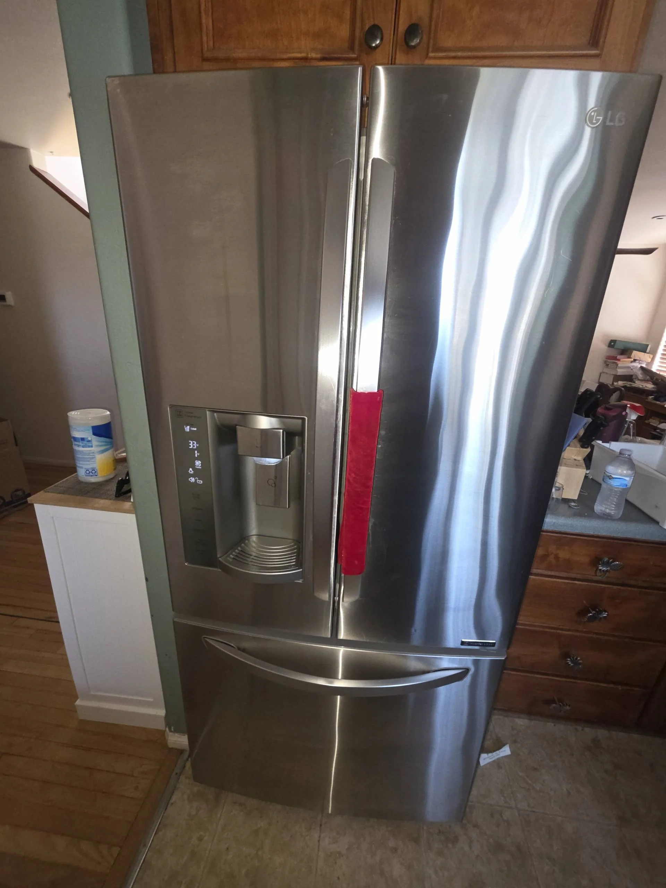

LG Refrigerator Displays an Error Code — Possible Control Board, Sensor, or Communication Failure
When an LG refrigerator displays an error code, it is the appliance's way of indicating that one of its monitoring systems has detected an abnormal operating condition. Modern LG refrigerators constantly monitor temperatures, fan operation, defrost cycles, compressors, sensors, and electronic communication between internal components. Whenever one of these systems reports an unexpected value or fails to respond correctly, the refrigerator stores a diagnostic fault and displays an error code on the control panel. While some codes are triggered by temporary electrical interruptions, many indicate an actual component failure that requires professional diagnosis.
Unlike older refrigerators that provided little information when something went wrong, LG models are equipped with sophisticated self-diagnostic technology. The displayed error code helps narrow down the source of the malfunction, but it does not always identify the exact failed component. In many cases, several different parts can produce the same error because they operate within the same electrical circuit or communication network. For this reason, interpreting the code correctly is only the first step toward identifying the actual cause of the problem.
One of the most common reasons for an error code is a faulty electronic control board. The main control board functions as the central computer of the refrigerator, receiving information from temperature sensors, monitoring fan operation, controlling the compressor, activating the defrost cycle, and communicating with the display panel. If the control board develops damaged circuits, experiences internal component failure, or suffers electrical damage from a power surge, it may begin displaying random error codes even when several refrigerator functions still appear to operate normally. As the failure progresses, cooling performance may become inconsistent, fans may stop working intermittently, or the refrigerator may fail to complete normal operating cycles.

Temperature sensor failure is another frequent cause of LG refrigerator error codes. Multiple thermistors are installed throughout the appliance to monitor temperatures in the freezer compartment, fresh food section, evaporator, and sometimes the ambient environment. These sensors continuously send resistance values to the control board so it can regulate compressor operation and maintain stable temperatures. If a thermistor begins sending inaccurate readings, develops an internal open circuit, or becomes electrically shorted, the control board may interpret the data as a system fault and display an error code. Depending on which sensor has failed, the refrigerator may cool excessively, fail to maintain proper temperatures, run continuously, or stop cooling altogether.
Communication failures between electronic components also commonly trigger diagnostic codes. Modern LG refrigerators often contain several separate electronic boards, including the main control board, display board, inverter board, and ice maker control module. These components constantly exchange digital information through dedicated communication circuits. If one board stops responding, a wiring harness becomes damaged, connectors loosen, or communication signals are interrupted, the refrigerator may display a communication error. In some situations, the display panel may become partially unresponsive, certain functions may stop working, or multiple unrelated error codes may appear at the same time.
Fan-related problems frequently generate error codes as well. LG refrigerators rely on evaporator and condenser fans to circulate cold air and remove heat from the refrigeration system. If a fan motor becomes defective, ice prevents the blades from rotating, wiring becomes damaged, or the control board fails to supply power, the refrigerator quickly detects the abnormal operating condition.
The automatic defrost system can also be responsible for certain error messages. The No Frost system consists of a defrost heater, defrost sensor, thermal fuse, and electronic controls that periodically remove frost from the evaporator coils. When any of these components fail, frost gradually accumulates around the evaporator, restricting airflow and reducing cooling efficiency. As the frost buildup increases, the refrigerator may detect abnormal temperatures or extended compressor operation and generate an error code related to the defrost system. Left unrepaired, this condition often leads to poor cooling performance in both compartments.
Some homeowners attempt to clear the error by disconnecting the refrigerator from power for several minutes. Performing a complete power reset can occasionally eliminate temporary electronic glitches caused by voltage fluctuations or brief communication interruptions. However, if the error code reappears shortly after the refrigerator restarts, the underlying hardware problem remains unresolved. Repeatedly resetting the appliance without identifying the failed component only delays the necessary repair and may allow additional damage to develop.
Power surges and unstable electrical supply are another factor that can contribute to electronic failures. Sensitive control boards and communication circuits are designed to operate within specific voltage ranges. Sudden voltage spikes may damage electronic components or corrupt communication between control modules, resulting in persistent error codes. In areas where electrical interruptions occur frequently, surge protection may help reduce the risk of future electronic failures, although it cannot prevent normal component wear over time.
Several warning signs often accompany LG refrigerator error codes. Homeowners may notice inconsistent cooling, unusual fan noises, a compressor that runs almost continuously, an unresponsive control panel, flashing display lights, repeated alarm sounds, or multiple diagnostic codes appearing one after another. In some cases, the refrigerator may continue cooling temporarily despite displaying an error, while in others it may stop operating entirely until the fault is corrected.
Diagnosing electronic refrigerator problems requires more than simply reading the displayed code. Professional technicians use service manuals, wiring diagrams, multimeters, and manufacturer diagnostic procedures to verify sensor resistance, inspect communication circuits, measure voltage supplied to individual components, and test the operation of control boards. Because many error codes can be caused by several different failures, replacing parts without proper testing often results in unnecessary expenses and does not permanently solve the problem.
To reduce the likelihood of electronic failures, it is recommended to keep the refrigerator connected to a stable power source, maintain adequate ventilation around the appliance, clean condenser coils regularly, inspect door gaskets for proper sealing, and avoid exposing electronic controls to excessive moisture. Routine maintenance helps the refrigerator operate more efficiently and reduces unnecessary stress on electrical components.
If your LG refrigerator displays an error code, it should not be ignored, even if the appliance still appears to cool normally. Error codes are designed to warn about developing problems before they lead to complete system failure or food spoilage. Professional diagnosis can accurately determine whether the issue involves the main control board, a faulty temperature sensor, damaged wiring, fan malfunction, or communication failure between electronic modules. Prompt repairs help restore reliable operation, prevent additional component damage, and ensure your LG refrigerator continues operating safely and efficiently for years to come.